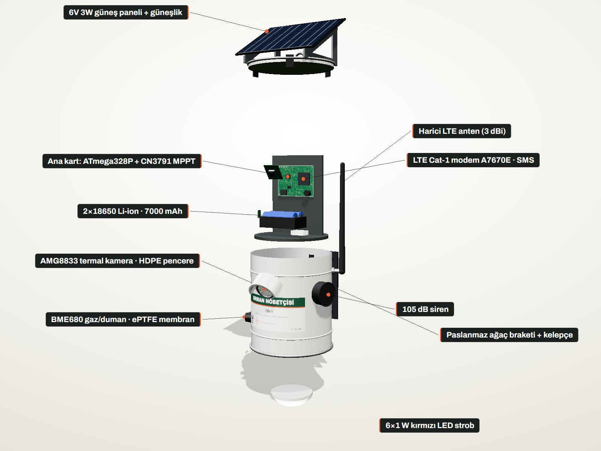
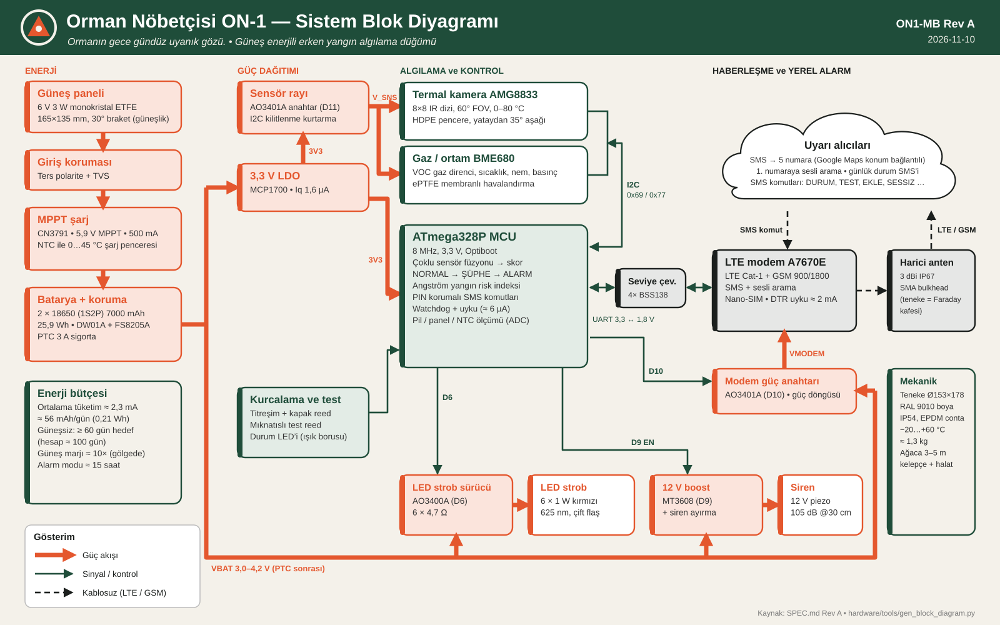
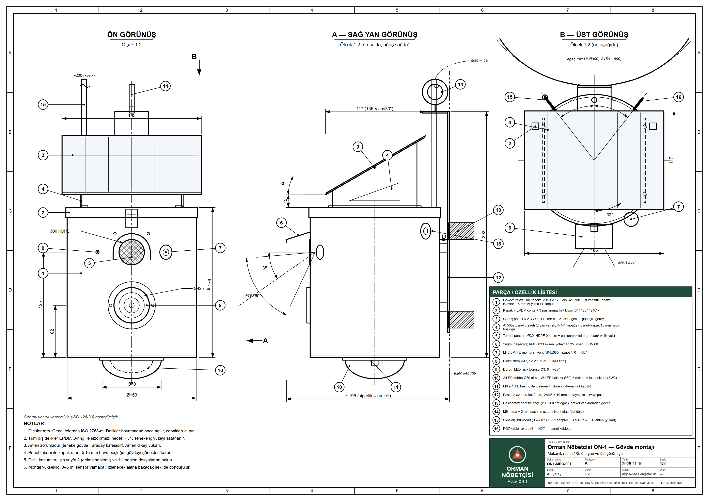
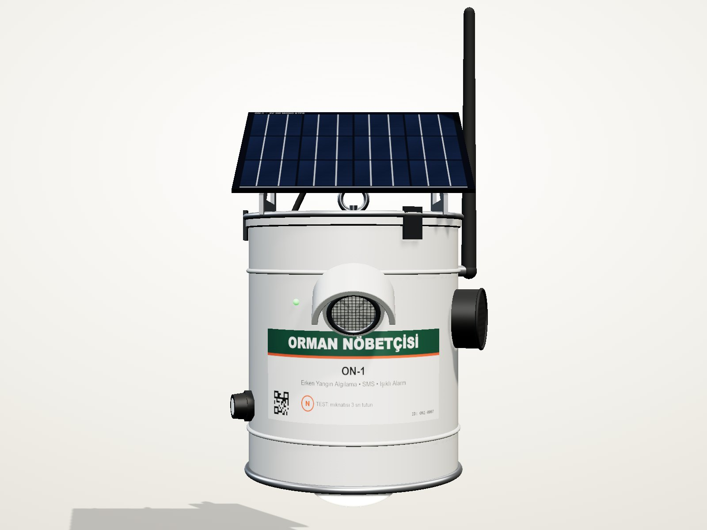
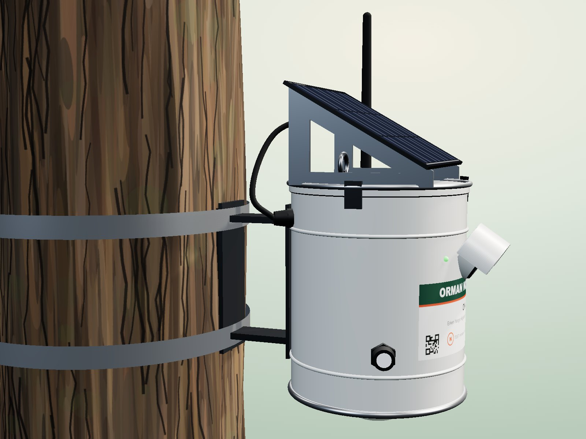
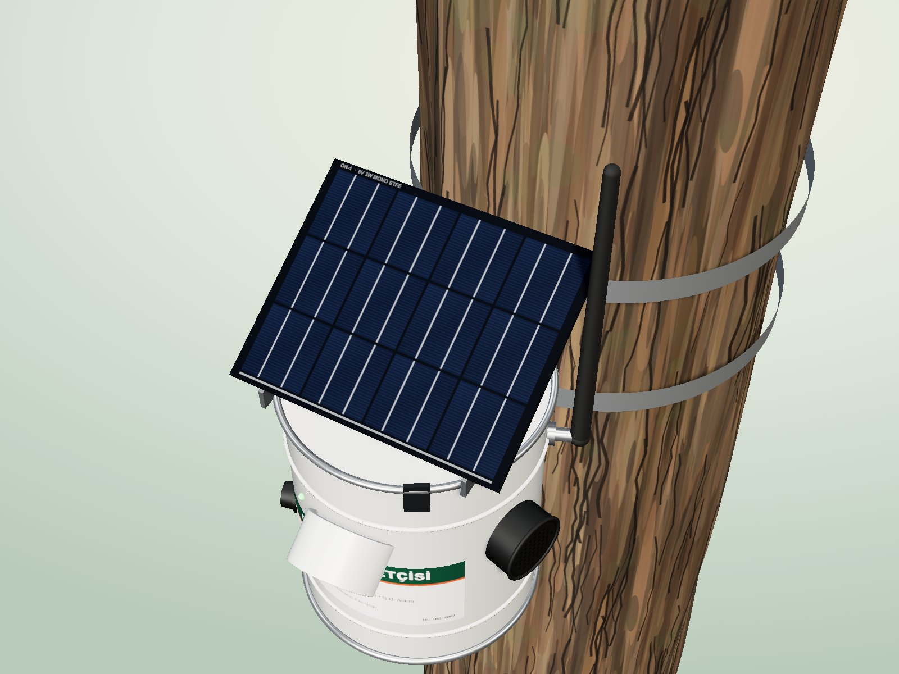
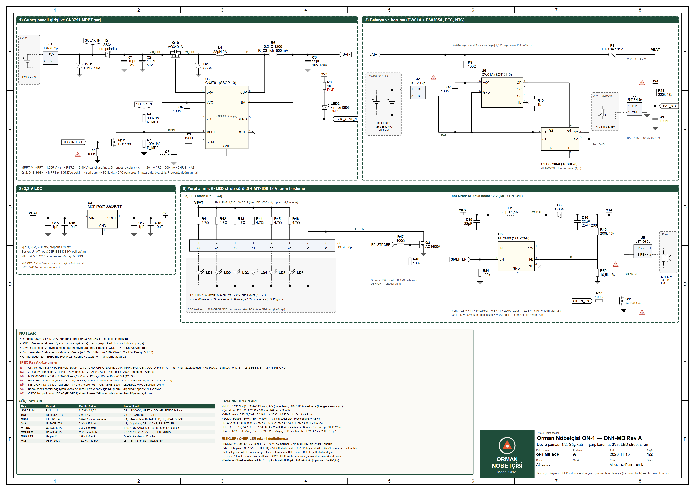
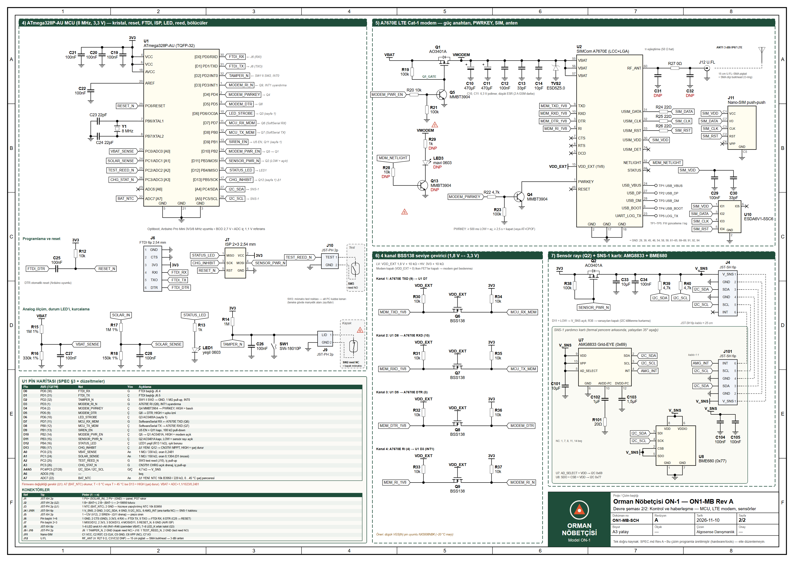

Donanım, firmware, mekanik, üretim ve saha kurulumu

| Doküman no | ON1-TDD-001 | Revizyon | A |
| Tarih | 10.11.2026 | Durum | Üretime hazır tasarım (pilot öncesi) |
| Ana kart | ON1-MB Rev A | Firmware | ON1-FW 1.0.0 |
SPEC.md dosyasından üretilir. Değişiklikler önce orada yapılır, ardından build.sh ile tüm çıktılar yeniden oluşturulur.| Klasör | İçerik |
|---|---|
SPEC.md | Sistem spesifikasyonu (tek doğru kaynak) |
hardware/ | Devre şeması (SVG/PNG/PDF), blok diyagram, BOM.csv, bağlantı listesi, mekanik çizim, üretici scriptler |
firmware/ | Arduino kaynak kodu, birim testleri, derleme ve kurulum kılavuzu |
web/ | Tanıtım sitesi, etkileşimli 3B model (Three.js), render sayfası |
renders/ | 3B ürün görselleri (1600×1200 PNG) |
docs/ | Broşür ve bu doküman (HTML kaynak + PDF) |
Orman Nöbetçisi ON-1, ağaçlara asılan, güneş enerjisiyle çalışan, beyaza boyanmış kalaylı sac (teneke) gövdeli bir erken orman yangını algılama düğümüdür. Termal kamera (8×8 IR dizisi) + gaz/duman + sıcaklık/nem verilerini birleştirerek yangını tespit eder; SMS ile 5 numaraya konum bağlantılı uyarı gönderir ve bulunduğu yerde kırmızı strob ışık + 105 dB siren ile yerel alarm verir.
| Başlık | Değer |
|---|---|
| Mikrodenetleyici | ATmega328P-AU @ 8 MHz, 3,3 V (Arduino Pro Mini 3V3/8 MHz uyumlu, Optiboot) |
| Haberleşme | SIMCom A7670E LTE Cat-1 (B1/B3/B5/B7/B8/B20) + GSM 900/1800 yedek; SMS + sesli arama |
| Anten | Harici 3 dBi IP67 LTE çubuk anten, SMA bulkhead (teneke Faraday kafesi olduğu için zorunlu) |
| Termal algılama | Panasonic AMG8833 Grid-EYE, 8×8 = 64 piksel, 60° FOV, 0–80 °C, ±2,5 °C |
| Gaz / ortam | Bosch BME680 (VOC gaz direnci, sıcaklık, nem, basınç) |
| Kurcalama | SW-18010P titreşim/eğim anahtarı + kapak reed anahtarı |
| Test | Manyetik reed anahtarı (gövde dışından mıknatısla test/kurulum modu) |
| Yerel alarm | 6 × 1 W kırmızı (625 nm) LED strob halkası + 12 V 105 dB IP65 piezo siren |
| Güneş paneli | 6 V 3 W monokristal ETFE, 165 × 135 mm, 30° eğimli alüminyum braket (aynı zamanda güneşlik) |
| Şarj | CN3791 MPPT tek hücre Li-ion şarj, NTC ile 0–45 °C şarj koruması |
| Batarya | 2 × 18650 Li-ion 3500 mAh paralel (1S2P) = 7000 mAh / 25,9 Wh, DW01A+FS8205A koruma |
| Ortalama tüketim | ≈ 2,3 mA (≈ 56 mAh/gün) |
| Güneşsiz çalışma | ≥ 60 gün garanti hedefi (hesaplanan ≈ 95 gün, §5) |
| Gövde | Kalaylı sac teneke Ø153 × 178 mm (≈ 3 L), beyaz RAL 9010 ısı yansıtıcı boya, EPDM conta, IP54 |
| Çalışma sıcaklığı | −20 … +60 °C (şarj 0 … 45 °C) |
| Ağırlık | ≈ 1,3 kg (panel + braket dahil) |
| Montaj | 3–5 m yükseklik; paslanmaz gövde kelepçesi (Ø15–60 cm ağaç) veya M6 mapa + 2 mm paslanmaz halat |
| Algılama menzili | Termal sıcak nokta: 1 m² açık alev için tipik 25–30 m (açık görüş, hesaplanan; saha testiyle doğrulanmalı) |
| Önerilen yerleşim | Yüksek riskli hatlar (piknik alanı, yol kenarı, yerleşim-orman ara yüzü) boyunca 50–100 m aralık |
| No | Gereksinim | Karşılama |
|---|---|---|
| G-01 | Arduino tabanlı, yerelde programlanabilir | ATmega328P (Pro Mini 3V3/8 MHz uyumlu), FTDI + ISP başlıkları |
| G-02 | Güneş enerjisiyle bakım gerektirmeden çalışma | 3 W panel + MPPT, ≈ 10× enerji marjı, ≥ 60 gün güneşsiz |
| G-03 | Teneke gövde, ağaca asılabilir | Ø153×178 mm teneke, paslanmaz kelepçe ve M6 mapa |
| G-04 | Yangında SMS uyarısı | LTE Cat-1/GSM, 5 numara, konum bağlantısı, ≤ 160 karakter |
| G-05 | Yerinde ışıklı alarm | 6 × 1 W kırmızı strob + 105 dB siren |
| G-06 | Düşük yanlış alarm | 3 sensör füzyonu + 30 sn doğrulama + hassasiyet ayarı |
| G-07 | Sahada uzaktan yönetim | PIN korumalı SMS komutları, günlük durum raporu |

Sistem iki enerji alanından oluşur: sürekli alan (ATmega328P, MCP1700 LDO, AMG8833 ve BME680 uyku modunda, modem ağda uyku/DRX modunda) toplam ≈ 2,3 mA çeker; darbe alanı (ölçüm, SMS, alarm) yalnızca gerektiğinde açılır. Mikrodenetleyici watchdog ile 8 saniyede bir uyanır, ölçüm periyodu dolduysa sensörleri okur, skoru hesaplar ve tekrar uyur. Modemden gelen SMS, RI hattındaki darbe ile mikrodenetleyiciyi anında uyandırır; kurcalama ve mıknatıslı test anahtarı da kesme kaynağıdır.
Batarya rayı (VBAT, 3,0–4,2 V) üç yüke dağılır: 3,3 V LDO (mantık ve sensörler), yüksek taraf P-MOSFET ile anahtarlanan modem rayı ve alarm yükleri (doğrudan VBAT'tan beslenen LED strob, MT3608 ile 12 V'a yükseltilen siren). Bu ayrım modemin 2 A darbe akımının mikrodenetleyici beslemesini çökertmesini önler.
R_CS 0,24 Ω 1206 (I_ch = 120 mV / 0,24 Ω = 500 mA). MPPT bölücü: R_MP1 = 390 kΩ (üst), R_MP2 = 100 kΩ (alt) → V_MPPT = 1,205 × (1 + 390/100) = 5,90 V (6 V panel Vmp). ~~TEMP pini~~ CN3791'de TEMP pini yoktur (Δ1): batarya üzerine yapıştırılmış NTC 10 kΩ B3950 (J3) A7'den okunur; sıcaklık 0–45 °C dışındaysa D13 → Q12 BSS138 MPPT pinini GND'ye çekerek şarjı durdurur. CHRG → A3 (MCU), ayrıca kırmızı 0603 LED (opsiyonel, DNP üretimde).
AT+CPOF.)Kanallar: (1) MODEM_TXD→D7, (2) D8→MODEM_RXD, (3) D5→DTR, (4) RI→D3.
Sensör ekseni yataydan 35° aşağı bakar.
ortak katot hattı Q3 AO3400A ile GND'ye anahtarlanır. Kapı: 100 Ω seri, 100 kΩ pull-down, D6. Alüminyum MCPCB halka Ø50 mm, alt kapakta UV dayanımlı polikarbonat kubbe lens Ø70 mm. Desen: çift flaş (60 ms açık / 90 ms kapalı / 60 ms açık / 790 ms kapalı) ≈ %12 görev.
Çıkış → J5 → 12 V 105 dB @30 cm IP65 piezo siren (~30 mA @12 V).
| Arduino pin | AVR pin | Sinyal adı | Yön | Açıklama |
|---|---|---|---|---|
| D0 | PD0 RXD | FTDI_RX | G | Programlama/hata ayıklama (6 pin FTDI başlığı) |
| D1 | PD1 TXD | FTDI_TX | Ç | Programlama/hata ayıklama |
| D2 | PD2 INT0 | TAMPER_N | G | Titreşim + kapak reed anahtarı (paralel, GND'ye), 1 MΩ pull-up 3V3, aktif LOW, kesme |
| D3 | PD3 INT1 | MODEM_RI_N | G | A7670E RI (seviye çevrilmiş), aktif LOW darbe = yeni SMS/çağrı, kesme ile uyandırma |
| D4 | PD4 | MODEM_PWRKEY | Ç | MMBT3904 (Q4) bazına 4,7 kΩ; HIGH = PWRKEY'i GND'ye çeker |
| D5 | PD5 | MODEM_DTR | Ç | BSS138 üzerinden A7670E DTR; HIGH = modem uyku izni, LOW = uyandır |
| D6 | PD6 OC0A | LED_STROBE | Ç | AO3400A (Q3) kapısı, 100 Ω seri + 100 kΩ pull-down; HIGH = LED'ler yanar |
| D7 | PD7 | MODEM_TXD→MCU_RX | G | SoftwareSerial RX (A7670E TXD, seviye çevrilmiş), 9600 bps |
| D8 | PB0 | MCU_TX→MODEM_RXD | Ç | SoftwareSerial TX (A7670E RXD, seviye çevrilmiş) |
| D9 | PB1 | SIREN_EN | Ç | MT3608 EN, 100 kΩ pull-down; HIGH = 12 V siren çalışır |
| D10 | PB2 | MODEM_PWR_EN | Ç | MMBT3904 (Q5) → AO3401A (Q1) kapısı; HIGH = modem beslemesi açık |
| D11 | PB3 MOSI | SENSOR_PWR_N | Ç | AO3401A (Q2) kapısı doğrudan, 100 kΩ pull-up; LOW = sensör rayı açık (I2C kilitlenme kurtarma) |
| D12 | PB4 MISO | STATUS_LED | Ç | Yeşil durum LED'i (1 kΩ), ışık borusu ile dışarıdan görünür |
| D13 | PB5 SCK | CHG_INHIBIT | Ç | Q12 BSS138 → CN3791 MPPT pinini GND'ye çeker; HIGH = şarj durur (NTC koruması, Δ1) |
| A0 | PC0 ADC0 | VBAT_SENSE | Analog | 1 MΩ / 330 kΩ bölücü + 100 nF, iç 1,1 V referans |
| A1 | PC1 ADC1 | SOLAR_SENSE | Analog | 1 MΩ / 150 kΩ bölücü + 100 nF, iç 1,1 V referans |
| A2 | PC2 | TEST_REED_N | G | Manyetik test reed anahtarı, iç pull-up, aktif LOW |
| A3 | PC3 | CHG_STAT_N | G | CN3791 CHRG (açık drenaj), iç pull-up, LOW = şarj oluyor |
| A4 | PC4 SDA | I2C_SDA | Ç/G | 4,7 kΩ pull-up (sensör rayına) |
| A5 | PC5 SCL | I2C_SCL | Ç | 4,7 kΩ pull-up (sensör rayına) |
| A6 | ADC6 | — | — | Yedek |
| A7 | ADC7 | BAT_NTC | Analog | 220 kΩ (3V3'ten) / NTC 10 kΩ B3950 (GND'ye) + 100 nF; 0–45 °C şarj penceresi, 3 °C histerezis (Δ1) |
Bölücü hesapları (iç 1,1 V referans):
Vbat = adc * 1.1 / 1023 / 0.2481Vsol = adc * 1.1 / 1023 / 0.1304vrefCal, varsayılan 1.100).Orman Nöbetçisi ON-1 — ana kart ON1-MB Rev A + sensör kartı SNS-1 + kart dışı demetler. Tarih: 2026-11-10 • Kaynak: SPEC.md Rev A • Şema: schematic/ON1-MB_RevA_schematic_sheet1/2.svg
Bu tablo, şema çiziminden otomatik çıkarılmıştır (hardware/tools/gen_schematic.py→gen_docs.py). Şemadaki her tel, pin, güç sembolü ve net etiketi birleştirilerek bağlantılar hesaplanır; ERC kontrolü (tek uçlu net, açık uçlu tel, çakışan isim): 0 sorun.
Gösterim: U1:23 (PC0/ADC0 [A0]) = U1’in 23 numaralı pini (pin adı). (kablo ucu) = konektörün kablo tarafı.
| # | Düzeltme |
|---|---|
| Δ1 | CN3791’de TEMP/NTC pini yok (SSOP-10: VG, GND, CHRG, DONE, COM, MPPT, BAT, CSP, VCC, DRV). NTC → J3 → R11 220k bölücü → A7 (ADC7); şarj kesme: D13 → Q12 BSS138 → MPPT pini GND. |
| Δ2 | J2 batarya konektörü JST-PH (2 A) yerine JST-VH 2p (10 A): LED strob 1,8–2,5 A + modem 2 A darbe. |
| Δ3 | MT3608 VREF = 0,6 V: 200k/18k → 7,27 V verir. 12 V için R50 = 10,5 kΩ %1 (12,03 V). |
| Δ4 | Boost EN=LOW iken çıkış ≈ VBAT−0,4 V kalır, siren zayıf öter/akım çeker → Q11 AO3400A alçak taraf anahtar (D9). |
| Δ5 | NETLIGHT 1,8 V çıkış mavi LED’i (Vf≈2,9 V) süremez → Q13 MMBT3904 + LED3/R29 VMODEM’den (DNP). |
| Δ6 | Kapak reed’i paralel bağlıyken kapak açılınca LOW vermesi için NC (Form-B/C) olmalı; spec’te NO yazıyor. |
| Δ7 | Q4/Q5 baz pull-down 100 kΩ (R23/R21) eklendi: reset/ISP sırasında modem kendiliğinden açılmasın. |
| Net | Uç sayısı | Uçlar |
|---|---|---|
| GND | 85 | C1:2, C2:2, C5:2, C6:2, C9:2, C10:2, C11:2, C12:2, C13:2, C14:2, C15:2, C16:2, C17:2, C18:2, C19:2, C20:2, C21:2, C22:2, C23:2, C24:2, C26:2, C27:2, C28:2, C29:2, C30:2, C31:2, C32:2, C33:2, C34:2, C35:2, C36:2, C101:2, C103:2, C104:2, C105:2, D2:A, J1:2 (PV−), J3:2 (GND), J4:2 (GND), J4:4 (GND), J6:1 (GND), J6:2 (CTS), J7:6 (GND), J9:2 (GND), J10:2 (GND), J11:C5 (GND), J12:GND, J101:2 (GND), J101:4 (GND), LED1:K, Q3:S, Q4:E, Q5:E, Q11:S, Q12:S, Q13:E, R5:2, R7:2, R10:2, R16:2, R18:2, R21:2, R23:2, R48:2, R50:2, R51:2, R101:2, SW1:2, TVS1:A, TVS2:A, U1:3 (GND), U1:5 (GND), U1:21 (GND), U2:2 (GND), U2:17 (GND), U2:18 (GND), U3:2 (GND), U4:1 (GND), U5:2 (GND), U7:6 (GND), U8:1 (GND), U8:7 (GND), U9:6 (S2), U9:7 (S2), U10:2 (GND) |
| VBAT | 16 | C15:1, C16:1, C35:1, F1:1, L2:2, Q1:S, R15:1, R19:1, R41:1, R42:1, R43:1, R44:1, R45:1, R46:1, U4:3 (VIN), U5:5 (IN) |
| BAT+ | 6 | C6:1, F1:2, J2:1 (B+), R6:1, R9:1, U3:7 (BAT) |
| SOLAR_IN | 5 | D1:A, J1:1 (PV+), R4:1, R17:1, TVS1:K |
| 3V3 | 21 | C17:1, C18:1, C19:1, C20:1, C21:1, J6:3 (3V3), J7:2 (VCC), Q2:S, R8:1, R11:1, R12:1, R14:1, R34:1, R35:1, R36:1, R37:1, R38:1, U1:4 (VCC), U1:6 (VCC), U1:18 (AVCC), U4:2 (VOUT) |
| V_SNS | 17 | C33:1, C34:1, C101:1, C104:1, C105:1, J4:1 (V_SNS), J101:1 (V_SNS), Q2:D, R39:1, R40:1, U7:5 (AD_SELECT), U7:9 (VDD), U7:13 (VPP), U8:2 (CSB), U8:5 (SDO), U8:6 (VDDIO), U8:8 (VDD) |
| VMODEM | 11 | C10:1, C11:1, C12:1, C13:1, C14:1, Q1:D, R29:1, TVS2:K, U2:55 (VBAT), U2:56 (VBAT), U2:57 (VBAT) |
| VDD_EXT | 9 | Q6:G, Q7:G, Q8:G, Q9:G, R30:1, R31:1, R32:1, R33:1, U2:15 (VDD_EXT (1V8)) |
| V12 | 4 | C36:1, D3:K, J5:1 (+12V), R49:1 |
| Net | Uçlar |
|---|---|
| AMG_INT | J101:6 (INT), U7:4 (INT) |
| BAT_NTC | C9:1, J3:1 (NTC), R11:2, U1:22 (ADC7 [A7]) |
| BAT− | C7:2, J2:2 (B−), U6:6 (GND), U9:2 (S1), U9:3 (S1) |
| CHG_INHIBIT | J7:3 (SCK), Q12:G, R7:1, U1:17 ([D13] PB5/SCK) |
| CHG_STAT_N | LED2:K, U1:26 (PC3/ADC3 [A3]), U3:3 (CHRG) |
| CSP | L1:1, R6:2, U3:8 (CSP) |
| FB | R49:2, R50:1, U5:3 (FB) |
| FTDI_DTR | C25:2, J6:6 (DTR) |
| FTDI_RX | J6:4 (RXI), U1:30 ([D0] PD0/RXD) |
| FTDI_TX | J6:5 (TXO), U1:31 ([D1] PD1/TXD) |
| I2C_SCL | J4:5 (SCL), J101:5 (SCL), R40:2, U1:28 ([A5] PC5/SCL), U7:3 (SCL), U8:4 (SCK) |
| I2C_SDA | J4:3 (SDA), J101:3 (SDA), R39:2, U1:27 ([A4] PC4/SDA), U7:2 (SDA), U8:3 (SDI) |
| LED_K | J8:7 (K), J8:8 (K), Q3:D |
| LED_STROBE | R47:2, U1:10 ([D6] PD6/OC0A) |
| MCU_RX_MDM | Q6:D, R34:2, U1:11 ([D7] PD7) |
| MCU_TX_MDM | Q7:D, R35:2, U1:12 ([D8] PB0) |
| MDM_DTR_1V8 | Q8:S, R32:2, U2:3 (DTR) |
| MDM_NETLIGHT | R28:1, U2:52 (NETLIGHT) |
| MDM_RI_1V8 | Q9:S, R33:2, U2:4 (RI) |
| MDM_RXD_1V8 | Q7:S, R31:2, U2:10 (RXD) |
| MDM_TXD_1V8 | Q6:S, R30:2, U2:9 (TXD) |
| MODEM_DTR | Q8:D, R36:2, U1:9 ([D5] PD5) |
| MODEM_PWRKEY | R22:2, U1:2 ([D4] PD4) |
| MODEM_PWR_EN | R20:2, U1:14 ([D10] PB2) |
| MODEM_RI_N | Q9:D, R37:2, U1:1 ([D3] PD3/INT1) |
| MPPT | Q12:D, R4:2, R5:1, U3:6 (MPPT) |
| Q1_GATE | Q1:G, Q5:C, R19:2 |
| RESET_N | C25:1, J7:5 (RST), R12:2, U1:29 (PC6/RESET) |
| SENSOR_PWR_N | J7:4 (MOSI), Q2:G, R38:2, U1:15 ([D11] PB3/MOSI) |
| SIM_CLK | J11:C3 (CLK), R25:1, U10:4 (IO3) |
| SIM_DATA | J11:C7 (I/O), R24:1, U10:3 (IO2) |
| SIM_RST | J11:C2 (RST), R26:1, U10:5 (IO4) |
| SIM_VDD | C29:1, C30:1, J11:C1 (VCC), U2:30 (USIM_VDD), U10:1 (IO1) |
| SIREN_EN | R51:1, R52:2, U1:13 ([D9] PB1), U5:4 (EN) |
| SIREN_N | J5:2 (SİREN−), Q11:D |
| SOLAR_SENSE | C28:1, R17:2, R18:1, U1:24 (PC1/ADC1 [A1]) |
| STATUS_LED | J7:1 (MISO), R13:1, U1:16 ([D12] PB4/MISO) |
| SW_BST | D3:A, L2:1, U5:1 (SW) |
| SW_CHG | D2:K, L1:2, Q10:D |
| TAMPER_N | C26:1, J9:1 (LID), R14:2, SW1:1, U1:32 ([D2] PD2/INT0) |
| TEST_REED_N | J10:1 (TEST), U1:25 (PC2/ADC2 [A2]) |
| VBAT_SENSE | C27:1, R15:2, R16:1, U1:23 (PC0/ADC0 [A0]) |
| VIN_CHG | C1:1, C2:1, C4:1, D1:K, Q10:S, U3:9 (VCC) |
İsimsiz netler ilk uca göre adlandırılır (N_<ref>_<pin>).
| Net | Uçlar |
|---|---|
| N_C4_2 | C4:2, U3:1 (VG) |
| N_C5_1 | C5:1, R3:2 |
| N_C7_1 | C7:1, R9:2, U6:5 (VCC) |
| N_C22_1 | C22:1, U1:20 (AREF) |
| N_C23_1 | C23:1, U1:7 (PB6/XTAL1), Y1:1 |
| N_C24_1 | C24:1, U1:8 (PB7/XTAL2), Y1:2 |
| N_C31_1 | C31:1, R27:2, U2:60 (RF_ANT) |
| N_C32_1 | C32:1, J12:SIG, R27:1 |
| N_C102_1 | C102:1, U7:10 (AVDD-PC) |
| N_C102_2 | C102:2, R101:1 |
| N_C103_1 | C103:1, U7:12 (DVDD-PC) |
| N_J8_1 | J8:1 (A1), R41:2 |
| N_J8_2 | J8:2 (A2), R42:2 |
| N_J8_3 | J8:3 (A3), R43:2 |
| N_J8_4 | J8:4 (A4), R44:2 |
| N_J8_5 | J8:5 (A5), R45:2 |
| N_J8_6 | J8:6 (A6), R46:2 |
| N_LED1_A | LED1:A, R13:2 |
| N_LED2_A | LED2:A, R8:2 |
| N_LED3_A | LED3:A, R29:2 |
| N_LED3_K | LED3:K, Q13:C |
| N_Q3_G | Q3:G, R47:1, R48:1 |
| N_Q4_B | Q4:B, R22:1, R23:1 |
| N_Q4_C | Q4:C, U2:1 (PWRKEY) |
| N_Q5_B | Q5:B, R20:1, R21:1 |
| N_Q10_G | Q10:G, U3:10 (DRV) |
| N_Q11_G | Q11:G, R52:1 |
| N_Q13_B | Q13:B, R28:2 |
| N_R3_1 | R3:1, U3:5 (COM) |
| N_R10_1 | R10:1, U6:2 (CS) |
| N_R24_2 | R24:2, U2:31 (USIM_DATA) |
| N_R25_2 | R25:2, U2:32 (USIM_CLK) |
| N_R26_2 | R26:2, U2:33 (USIM_RST) |
| N_TP1_1 | TP1:1 (USB_VBUS), U2:24 (USB_VBUS) |
| N_TP2_1 | TP2:1 (USB_DP), U2:27 (USB_DP) |
| N_TP3_1 | TP3:1 (USB_DM), U2:28 (USB_DM) |
| N_TP4_1 | TP4:1 (USB_BOOT), U2:6 (USB_BOOT) |
| N_TP5_1 | TP5:1 (LOG_TX), U2:23 (UART_LOG_TX) |
| N_U6_1 | U6:1 (OD), U9:4 (G1) |
| N_U6_3 | U6:3 (OC), U9:5 (G2) |
| N_U9_1 | U9:1 (D), U9:8 (D) |
| Net | Uçlar |
|---|---|
| N_ANT1_1 | ANT1:1, J12:SIGR |
| N_BT1_+ | BT1:+, BT2:+, J2:1 (kablo ucu) |
| N_BT1_- | BT1:-, BT2:-, J2:2 (kablo ucu) |
| N_J1_1k | J1:1 (kablo ucu), PV1:+ |
| N_J1_2k | J1:2 (kablo ucu), PV1:- |
| N_J3_1k | J3:1 (kablo ucu), NTC1:1 |
| N_J3_2k | J3:2 (kablo ucu), NTC1:2 |
| N_J5_1k | J5:1 (kablo ucu), SR1:1 |
| N_J5_2k | J5:2 (kablo ucu), SR1:2 |
| N_J8_1k | J8:1 (kablo ucu), LD1:A |
| N_J8_2k | J8:2 (kablo ucu), LD2:A |
| N_J8_3k | J8:3 (kablo ucu), LD3:A |
| N_J8_4k | J8:4 (kablo ucu), LD4:A |
| N_J8_5k | J8:5 (kablo ucu), LD5:A |
| N_J8_6k | J8:6 (kablo ucu), LD6:A |
| N_J8_7k | J8:7 (kablo ucu), J8:8 (kablo ucu), LD1:K, LD2:K, LD3:K, LD4:K, LD5:K, LD6:K |
| N_J9_1k | J9:1 (kablo ucu), SW2:1 |
| N_J9_2k | J9:2 (kablo ucu), SW2:2 |
| N_J10_1k | J10:1 (kablo ucu), SW3:1 |
| N_J10_2k | J10:2 (kablo ucu), SW3:2 |
| N_J101_1k | J4:1 (kablo ucu), J101:1 (kablo ucu) |
| N_J101_2k | J4:2 (kablo ucu), J101:2 (kablo ucu) |
| N_J101_3k | J4:3 (kablo ucu), J101:3 (kablo ucu) |
| N_J101_4k | J4:4 (kablo ucu), J101:4 (kablo ucu) |
| N_J101_5k | J4:5 (kablo ucu), J101:5 (kablo ucu) |
| N_J101_6k | J4:6 (kablo ucu), J101:6 (kablo ucu) |
| Pin | Sinyal | Net |
|---|---|---|
| 1 | PV+ (panel +, kırmızı) | SOLAR_IN |
| 2 | PV− (panel −, siyah) | GND |
Panel kablosu PG7 rakordan girer. D1 SS34 seri ters polarite, TVS1 SMBJ7.0A paralel.
| Pin | Sinyal | Net |
|---|---|---|
| 1 | B+ (2×18650 paralel +) | BAT+ |
| 2 | B− (hücre −, FS8205A S1) | BAT− |
Hücre tarafı koruma öncesidir; sistem GND’si P− (FS8205A S2).
| Pin | Sinyal | Net |
|---|---|---|
| 1 | NTC (10k B3950) | BAT_NTC |
| 2 | GND | GND |
NTC hücreler arasına termal macun/kaptonla yapıştırılır.
| Pin | Sinyal | Net |
|---|---|---|
| 1 | V_SNS (3,3 V anahtarlı) | V_SNS |
| 2 | GND | GND |
| 3 | I2C_SDA | I2C_SDA |
| 4 | GND | GND |
| 5 | I2C_SCL | I2C_SCL |
| 6 | AMG_INT (ana kartta NC) | — (NC) |
Kablo 1:1, ≈25 cm, SDA/SCL arasında GND tel (çapraz konuşma azaltma).
| Pin | Sinyal | Net |
|---|---|---|
| 1 | V_SNS | V_SNS |
| 2 | GND | GND |
| 3 | I2C_SDA | I2C_SDA |
| 4 | GND | GND |
| 5 | I2C_SCL | I2C_SCL |
| 6 | AMG_INT (U7 pin 4) | AMG_INT |
| Pin | Sinyal | Net |
|---|---|---|
| 1 | +12V (V12, kırmızı) | V12 |
| 2 | SİREN− (Q11 drenaj, siyah) | SIREN_N |
12 V 105 dB piezo siren ≈30 mA. Siren Q11 ile ayrılır (Δ4).
| Pin | Sinyal | Net |
|---|---|---|
| 1 | GND | GND |
| 2 | CTS (GND) | GND |
| 3 | 3V3 | 3V3 |
| 4 | RXI ← FTDI TX | FTDI_RX |
| 5 | TXO → FTDI RX | FTDI_TX |
| 6 | DTR → C25 → RESET | FTDI_DTR |
Yalnızca 3,3 V FTDI kullanın; programlamada batarya takılı olmalı.
| Pin | Sinyal | Net |
|---|---|---|
| 1 | MISO (D12) | STATUS_LED |
| 2 | VCC 3V3 | 3V3 |
| 3 | SCK (D13) | CHG_INHIBIT |
| 4 | MOSI (D11) | SENSOR_PWR_N |
| 5 | RESET | RESET_N |
| 6 | GND | GND |
ISP sırasında D11 sensör rayını, D13 şarj kesmeyi kısa süre değiştirir — zararsız.
| Pin | Sinyal | Net |
|---|---|---|
| 1 | LED1 anot (R41 4,7 Ω → VBAT) | N_J8_1 |
| 2 | LED2 anot (R42 4,7 Ω → VBAT) | N_J8_2 |
| 3 | LED3 anot (R43 4,7 Ω → VBAT) | N_J8_3 |
| 4 | LED4 anot (R44 4,7 Ω → VBAT) | N_J8_4 |
| 5 | LED5 anot (R45 4,7 Ω → VBAT) | N_J8_5 |
| 6 | LED6 anot (R46 4,7 Ω → VBAT) | N_J8_6 |
| 7 | LED_K ortak katot | LED_K |
| 8 | LED_K ortak katot | LED_K |
Katot dönüşü 2 pine bölünmüştür (≈2,4 A tepe).
| Pin | Sinyal | Net |
|---|---|---|
| 1 | TAMPER_N | TAMPER_N |
| 2 | GND | GND |
Reed NC (Form-B) ya da Form-C’nin NC kontağı; kapak kapalıyken mıknatıs kontağı açık tutar.
| Pin | Sinyal | Net |
|---|---|---|
| 1 | TEST_REED_N | TEST_REED_N |
| 2 | GND | GND |
Reed NO; alt PC kubbe kenarına yerleştirilir (teneke manyetik alanı zayıflatır).
| Pin | Sinyal | Net |
|---|---|---|
| C1 | VCC | SIM_VDD |
| C2 | RST | SIM_RST |
| C3 | CLK | SIM_CLK |
| C5 | GND | GND |
| C6 | VPP (NC) | — (NC) |
| C7 | I/O | SIM_DATA |
| Pin | Sinyal | Net |
|---|---|---|
| SIG | RF (π ağı üzerinden U2 pin 60) | N_C32_1 |
| GND | GND | GND |
U.FL → 15 cm pigtail → SMA dişi bulkhead (O-ring) → 3 dBi IP67 LTE anten.
| J4 pin | Tel rengi (öneri) | J101 pin | Sinyal |
|---|---|---|---|
| 1 | kırmızı | 1 | V_SNS |
| 2 | siyah | 2 | GND |
| 3 | mavi | 3 | I2C_SDA |
| 4 | siyah | 4 | GND |
| 5 | sarı | 5 | I2C_SCL |
| 6 | beyaz | 6 | AMG_INT |
| Halka pedi | LED | Bağlantı | J8 pin |
|---|---|---|---|
| A1 | LD1 anot | R41 4,7 Ω 1 W → VBAT | 1 |
| A2 | LD2 anot | R42 4,7 Ω 1 W → VBAT | 2 |
| A3 | LD3 anot | R43 4,7 Ω 1 W → VBAT | 3 |
| A4 | LD4 anot | R44 4,7 Ω 1 W → VBAT | 4 |
| A5 | LD5 anot | R45 4,7 Ω 1 W → VBAT | 5 |
| A6 | LD6 anot | R46 4,7 Ω 1 W → VBAT | 6 |
| K | LD1–LD6 katot (ortak) | Q3 AO3400A drenaj → GND | 7, 8 |
Her LED ≈0,32 A @ 3,7 V (0,40 A @ 4,2 V); desen 60/90/60/790 ms (≈ %12 görev).
| Siren teli | J5 pin | Net | Not |
|---|---|---|---|
| + (kırmızı) | 1 | V12 | MT3608 çıkışı 12,03 V (R49 200k / R50 10,5k) |
| − (siyah) | 2 | SIREN_N → Q11 | SIREN_EN (D9) HIGH → U5 EN + Q11 açık |
| Pin | AVR (TQFP#) | Net | Yön | Açıklama |
|---|---|---|---|---|
| D0 | PD0 (30) | FTDI_RX | G | FTDI başlığı J6.4 |
| D1 | PD1 (31) | FTDI_TX | Ç | FTDI başlığı J6.5 |
| D2 | PD2 (32) | TAMPER_N | G | SW1 ‖ SW2 → GND, 1 MΩ pull-up, INT0 |
| D3 | PD3 (1) | MODEM_RI_N | G | A7670E RI (Q9), INT1 uyandırma |
| D4 | PD4 (2) | MODEM_PWRKEY | Ç | Q4 MMBT3904 → PWRKEY, HIGH = basılı |
| D5 | PD5 (9) | MODEM_DTR | Ç | Q8 → DTR; HIGH = uyku izni |
| D6 | PD6 (10) | LED_STROBE | Ç | Q3 AO3400A (sayfa 1) |
| D7 | PD7 (11) | MCU_RX_MDM | G | SoftwareSerial RX ← A7670E TXD (Q6) |
| D8 | PB0 (12) | MCU_TX_MDM | Ç | SoftwareSerial TX → A7670E RXD (Q7) |
| D9 | PB1 (13) | SIREN_EN | Ç | U5 EN + Q11 kapı, 100 kΩ pull-down |
| D10 | PB2 (14) | MODEM_PWR_EN | Ç | Q5 → Q1 AO3401A, HIGH = modem açık |
| D11 | PB3 (15) | SENSOR_PWR_N | Ç | Q2 AO3401A kapı, LOW = sensör rayı açık |
| D12 | PB4 (16) | STATUS_LED | Ç | LED1 yeşil (R13 1 kΩ), ışık borusu |
| D13 | PB5 (17) | CHG_INHIBIT | Ç | Δ1 YENİ: Q12 → CN3791 MPPT, HIGH = şarj durur |
| A0 | PC0 (23) | VBAT_SENSE | An | 1 MΩ / 330 kΩ, oran 0,2481 |
| A1 | PC1 (24) | SOLAR_SENSE | An | 1 MΩ / 150 kΩ, oran 0,1304 (D1 öncesi) |
| A2 | PC2 (25) | TEST_REED_N | G | SW3 test reed (J10), iç pull-up |
| A3 | PC3 (26) | CHG_STAT_N | G | CN3791 CHRG açık drenaj, iç pull-up |
| A4/A5 | PC4/PC5 (27/28) | I2C_SDA / I2C_SCL | G/Ç | 4,7 kΩ → V_SNS |
| A6 | ADC6 (19) | — | boş | |
| A7 | ADC7 (22) | BAT_NTC | An | Δ1 YENİ: NTC 10k B3950 / 220 kΩ, 0…45 °C şarj penceresi |
Kullanılmayan: A6 (ADC6). TQFP GND: 3, 5, 21; VCC: 4, 6; AVCC: 18; AREF: 20 (100 nF → GND, iç 1,1 V referans).
| Pin | Ad | Bağlantı |
|---|---|---|
| 55, 56, 57 | VBAT | VMODEM (Q1), 2×470 µF + 100 nF + 33 pF + 10 pF + ESD5Z5.0 |
| 1 | PWRKEY | Q4 kollektör (iç 50 kΩ pull-up VBAT’a) |
| 16 | RESET | NC (iç pull-up) |
| 9 | TXD | MDM_TXD_1V8 → Q6 → D7 |
| 10 | RXD | MDM_RXD_1V8 ← Q7 ← D8 |
| 3 | DTR | MDM_DTR_1V8 ← Q8 ← D5 |
| 4 | RI | MDM_RI_1V8 → Q9 → D3 |
| 7, 8, 5 | CTS, RTS, DCD | NC |
| 15 | VDD_EXT (VDD_1V8) | BSS138 kapıları + LV pull-up (50 mA maks.) |
| 30–33 | USIM_VDD/DATA/CLK/RST | J11 (22 Ω seri, ESDA6V1-5SC6, 100 nF + 33 pF) |
| 34 | USIM_DET | NC |
| 60 | RF_ANT | R27 0 Ω π ağı → J12 U.FL |
| 52 | NETLIGHT | R28 → Q13 → LED3 (DNP, Δ5) |
| 66 | STATUS | NC |
| 24, 27, 28, 6, 23 | VBUS, DP, DM, USB_BOOT, LOG_TX | TP1–TP5 (FW güncelleme) |
| 2, 17, 18, … | GND | Tüm GND pinleri katı GND düzlemine |
C31, C32, LED2, LED3, Q13, R8, R28, R29 — hata ayıklama / RF ayarı içindir.
Elektronik: 71,22 USD • Mekanik: 26,58 USD • Üretim: 16,35 USD • Genel toplam: 114,15 USD / cihaz (~100 adet, KDV/nakliye/SIM hariç).
| Tüketici | Akım | Süre/oran | Ortalama |
|---|---|---|---|
| ATmega328P power-down + WDT | 6 µA | sürekli | 0,006 mA |
| MCP1700 Iq | 1,6 µA | sürekli | 0,002 mA |
| Gerilim bölücüler | 3,2 µA | sürekli | 0,003 mA |
| AMG8833 uyku modu | 0,2 mA | sürekli | 0,200 mA |
| AMG8833 ölçüm | 4,5 mA | 0,3 s / 60 s | 0,023 mA |
| BME680 gaz ölçümü (ısıtıcı) | 12 mA | 0,15 s / 60 s | 0,030 mA |
| MCU aktif | 3 mA | 0,5 s / 60 s | 0,025 mA |
| A7670E uyku (DTR HIGH, CSCLK=1, DRX) | 2,0 mA | sürekli | 2,000 mA |
| Günlük durum SMS'i | 300 mA | 10 s / gün | 0,035 mA |
| Toplam | ≈ 2,32 mA ≈ 56 mAh/gün (0,21 Wh) |
ARAMA AC).Alarm sürerken her 15 dk'da güncel SMS (en fazla 4). Siren: 3 dk açık / 2 dk kapalı döngü, toplam en fazla 30 dk; ışık 60 dk. 10 dk boyunca skor = 0 ⇒ "YANGIN BELIRTISI SONA ERDI" SMS'i ⇒ NORMAL.
Hassasiyet HASSAS 1 (düşük) / 2 (normal, varsayılan) / 3 (yüksek) eşikleri ölçekler (tabloda seviye 2 değerleri; seviye 1 ×1,3, seviye 3 ×0,75):
maxT ≥ 70 °C ⇒ +3; değilse maxT − medyan ≥ 25 °C ⇒ +2, ≥ 12 °C ⇒ +1. maxT artış hızı ≥ 8 °C/dk ⇒ +1. Sıcak piksel sayısı (> medyan + 10) ≥ 3 ⇒ +1.
oran = gazR / taban; < 0,40 ⇒ +2; < 0,65 ⇒ +1. Taban: temiz havada EMA (α = 0,01), sadece NORMAL'de ve oran > 0,8 iken güncellenir; ilk 30 dk ısınma.I = RH/20 + (27 − T)/10; I < 2,0 "ÇOK YÜKSEK", 2,0–2,5 "YÜKSEK", 2,5–4,0 "ORTA", > 4,0 "DÜŞÜK".<PIN> KOMUT [parametre], büyük/küçük harf duyarsız, varsayılan PIN 1234)| Komut | Örnek | İşlev |
|---|---|---|
| DURUM | 1234 DURUM | Anlık sensör, pil, risk, sinyal raporu |
| TEST | 1234 TEST | 5 s ışık+siren testi + tüm numaralara test SMS'i |
| EKLE | 1234 EKLE 2 +905321112233 | Numara yuvası 1–5'e numara ekler (1 = yönetici) |
| SIL | 1234 SIL 2 | Yuvayı siler |
| LISTE | 1234 LISTE | Kayıtlı numaraları listeler |
| KONUM | 1234 KONUM 39.70512,26.85211 | Kurulum koordinatı |
| AD | 1234 AD KazDagi-K3 | Cihaz adı (≤ 20 karakter) |
| HASSAS | 1234 HASSAS 3 | Hassasiyet 1/2/3 |
| SESSIZ | 1234 SESSIZ 30 | Yerel alarmı N dk susturur (SMS devam eder) |
| SIREN | 1234 SIREN KAPA | Sireni kalıcı kapat/aç (AC/KAPA) |
| ARAMA | 1234 ARAMA AC | Alarmda 1. numarayı sesli arama aç/kapat |
| RAPOR | 1234 RAPOR 24 | Periyodik durum SMS aralığı (saat, 0 = kapalı) |
| KALIBRE | 1234 KALIBRE | Gaz tabanını sıfırlar |
| SIFIRLA | 1234 SIFIRLA | Alarmı onaylar / durumu NORMAL'e döndürür |
| PIN | 1234 PIN 5678 | PIN değiştirir |
Güvenlik: PIN her zaman zorunlu; numara listesi doluysa gönderen listede olmalı; liste boşsa doğru PIN ile ilk EKLE 1 komutu gönderen numarayı yönetici yapar. Yanıtlar ASCII Türkçe (GSM 7-bit uyumlu: ç→c, ğ→g, ı→i, ö→o, ş→s, ü→u), tek SMS ≤ 160 karakter.
YANGIN ALARMI! ON1-0007 KazDagi-K3 maps.google.com/?q=39.70512,26.85211 Termal:78C Gaz:%38 Hava:41C/%12 Pil:%86 Skor:6
AT+CCLK?) ile günlük düzeltilir.AT+CMGF=1, AT+CNMI=2,1,0,0,0, AT+CSCLK=1, AT+CFGRI=1, AT+IPR=9600.| Dosya | Satır |
|---|---|
OrmanNobetcisi.ino | 710 |
alarm.cpp | 118 |
alarm.h | 18 |
commands.cpp | 343 |
commands.h | 39 |
compat.h | 26 |
config.h | 108 |
detector.cpp | 225 |
detector.h | 135 |
modem.cpp | 377 |
modem.h | 26 |
pins.h | 30 |
power.cpp | 250 |
power.h | 39 |
sensors.cpp | 365 |
sensors.h | 12 |
storage.cpp | 70 |
storage.h | 47 |
textutil.cpp | 325 |
textutil.h | 56 |
arduino-cli 1.5.1 · core arduino:avr 1.8.8 · FQBN arduino:avr:pro:cpu=8MHzatmega328 · --warnings all Üretim (DEBUG 0): Flash 27 040 / 30 720 B (%88) · Global RAM 733 / 2 048 B (%35) — NTC şarj koruması (Δ1) dahil Hata ayıklama (DEBUG 1): Flash 28 390 B (%92) · RAM 911 B (%44) Proje kodunda derleyici uyarısı: 0 (yalnızca çekirdeğin new.cpp dosyasında uyarı var) Harici kütüphane: yok (AMG8833/BME680/TWI için ~2 KB doğrudan sürücüler; Adafruit kütüphaneleri 14,6 KB ile sığmıyordu) Birim testleri: Node.js portu 388/388 geçti; C++ testi (test/test_logic.cpp) avr-g++ ile derleniyor, yerel g++ olmadığından çalıştırılmadı
Güneş enerjili erken orman yangını algılama düğümü ON-1 için Arduino firmware'i. Tek doğru kaynak: [../SPEC.md](../SPEC.md) (Rev A). Pin, eşik veya davranış değişikliği önce SPEC.md'de yapılır.
| Hedef | ATmega328P @ 8 MHz, 3,3 V — Arduino Pro Mini 3V3/8 MHz uyumlu |
| FQBN | arduino:avr:pro:cpu=8MHzatmega328 |
| Çekirdek | Arduino AVR Boards 1.8.8 (arduino:avr) |
Bellek (üretim derlemesi, DEBUG 0) | Flash 27 040 / 30 720 B (%88), global RAM 733 / 2048 B (%35) |
Bellek (DEBUG 1) | Flash ≈ 28 000 B (%91), RAM ≈ 900 B (%44) — yalnız geliştirme için |
firmware/
├── OrmanNobetcisi/ Arduino sketch klasörü
│ ├── OrmanNobetcisi.ino durum makinesi (NORMAL / SUPHE / ALARM + pil modları), SMS metinleri
│ ├── config.h tüm ayarlar, eşikler, süreler, DEBUG anahtarı
│ ├── pins.h pin haritası (SPEC §3 — değiştirmeyin)
│ ├── compat.h AVR/PC ortak katmanı (PROGMEM)
│ ├── storage.h/.cpp EEPROM ayar yapısı: sihirli sayı + sürüm + CRC8 [saf + AVR]
│ ├── textutil.h/.cpp SMS tamponu (≤160), ASCII Türkçe, UCS2, telefon, ağ saati [saf]
│ ├── detector.h/.cpp skor, Angström indeksi, gaz tabanı EMA, artış geçmişi [saf]
│ ├── commands.h/.cpp SMS komut ayrıştırıcı + PIN / beyaz liste güvenliği [saf]
│ ├── power.h/.cpp WDT uykusu, saat, kesmeler, ADC (iç 1,1 V), raylar
│ ├── sensors.h/.cpp AMG8833 + BME680 doğrudan yazmaç sürücüsü, I2C kurtarma
│ ├── alarm.h/.cpp Timer2 çift flaş strob, siren döngüsü, susturma
│ └── modem.h/.cpp A7670E güç/PWRKEY, AT, SMS, RI/DTR uykusu, CSQ, ağ saati, arama
└── test/
├── test_logic.cpp [saf] modüllerin birim testleri (PC'de g++/clang++/cl)
├── Makefile, run_tests.cmd
└── node/ C++ derleyici olmayan ortamlar için Node.js yedeği
[saf] dosyalar Arduino'ya bağımlı değildir; aynı kaynak hem AVR'de hem PC'de derlenir ve test edilir.
| Kütüphane | Sürüm | Not |
|---|---|---|
Arduino AVR Boards (arduino:avr) | 1.8.8 | çekirdek |
| SoftwareSerial | 1.0 (çekirdekle gelir) | A7670E, 9600 bps |
Başka kütüphane gerekmez. Wire, EEPROM, Adafruit AMG88xx / BME680 kullanılmaz:
14,6 KB flash + 933 B RAM tutuyor (ölçüldü); modem/komut koduyla birlikte 30 KB'ye sığmıyor (~38 KB).
sensors.cpp içinde ~2 KB'lık doğrudan yazmaç sürücüsü var: Bosch BME680 tamsayı dengelemeformülleri (sıcaklık, nem, ısıtıcı) + gaz direnci formülü; Panasonic Grid-EYE yazmaç haritası; AMG8833 uyku modu (0,2 mA — SPEC §5 güç bütçesi buna dayanır).
Wire yerine zaman aşımlı, yoklamalı küçük bir TWI sürücüsü var (−1,3 KB flash, −160 B RAM; hiçbir I2C beklemesi MCU'yu kilitleyemez). EEPROM için doğrudan avr/eeprom.h (eeprom_update_block).
firmware/OrmanNobetcisi/OrmanNobetcisi.ino dosyasını açın (klasör adı sketch adıyla aynı olmalı).config.h → #define DEVICE_ID_DEFAULT 7 (SMS'lerde ON1-0007).Sketch uses 27040 bytes (88%)… Global variables use 733 bytes (35%).arduino-cli core update-index arduino-cli core install arduino:avr@1.8.8 arduino-cli compile --fqbn arduino:avr:pro:cpu=8MHzatmega328 --warnings all firmware/OrmanNobetcisi # Cihaz kimliğini kaynak değiştirmeden vermek için: arduino-cli compile --fqbn arduino:avr:pro:cpu=8MHzatmega328 \ --build-property "build.extra_flags=-DDEVICE_ID_DEFAULT=7" firmware/OrmanNobetcisi # Hata ayıklama derlemesi (D0/D1 FTDI, 38400 bps log): arduino-cli compile --fqbn arduino:avr:pro:cpu=8MHzatmega328 \ --build-property "build.extra_flags=-DDEBUG=1" firmware/OrmanNobetcisi
DEVICE_ID_DEFAULT yalnız EEPROM boş/bozukken kullanılır. Önceden kurulmuş bir karta farklı kimlik vermek içinstorage.hiçindekiSETTINGS_VERSIONdeğerini artırın (tüm ayarlar varsayılana döner) veya EEPROM'u silin.
| Sigorta | Değer | Anlamı |
|---|---|---|
| Low | 0xFF | harici kristal 8 MHz, 16K CK başlangıç |
| High | 0xDA | 2 KB bootloader alanı, SPIEN |
| Extended | 0xFD | BOD 2,7 V |
ATmegaBOOT_168_atmega328_pro_8MHz yükleyicisi watchdog sıfırlamasından sonra WDT'yi kapatmaz ve kart sonsuz sıfırlama döngüsüne girebilir. Firmware WDT'yi .init3 aşamasında hemen kapatır ama yükleyici önce çalıştığı için Optiboot önerilir:
(MiniCore:avr:328:clock=8MHz_external,bootloader=uart0,BOD=2v7) → Burn Bootloader. Optiboot 0,5 KB yer kaplar; firmware her iki yükleyiciye de (30 720 B sınırı) sığar.
arduino-cli upload -P usbasp …).GND, CTS, 3V3, TX, RX, DTR(FTDI TX → kart RX, FTDI RX → kart TX; DTR otomatik reset içindir).
GND/TX/RX/DTR yeterlidir. Pilsiz masada FTDI 3V3 MCU'yu besleyebilir (modem bu durumda açılamaz).
arduino-cli upload -p COM5 --fqbn arduino:avr:pro:cpu=8MHzatmega328 firmware/OrmanNobetcisi `` IDE'de: Sketch → Upload. Port Linux'ta /dev/ttyUSB0`.
`` 1234 EKLE 1 +905321112233 ` Yanıt: ON1-0007 TAMAM: yonetici 1 = +905321112233`
`` 1234 KONUM 39.70512,26.85211 1234 AD KazDagi-K3 ``
`` 1234 EKLE 2 +905321112244 1234 PIN 5678 ``
5678 DURUM ile raporu kontrol edin.5678 KALIBRE tabanı sıfırlar.Biçim: <PIN> KOMUT [parametre] — büyük/küçük harf duyarsız, varsayılan PIN 1234. Türkçe karakterli yazım da kabul edilir (SİL, SESSİZ, SİREN AÇ; UTF-8, Latin-5 veya UCS2 SMS). Tüm yanıtlar ON1-XXXX ile başlar, ASCII'dir ve en fazla 160 karakterdir.
| Komut | Örnek | İşlev | Örnek yanıt |
|---|---|---|---|
| DURUM | 1234 DURUM | Anlık sensör, pil, risk, sinyal raporu | bkz. §8 |
| TEST | 1234 TEST | 5 s ışık+siren testi + tüm numaralara test SMS'i | (ayrı yanıt yok; test SMS'i gelir) |
| EKLE | 1234 EKLE 2 +905321112233 | Yuva 1–5'e numara (1 = yönetici) ¹ | TAMAM: 2 = +905321112233 |
| SIL | 1234 SIL 2 | Yuvayı siler ¹ | TAMAM: 2 silindi |
| LISTE | 1234 LISTE | Kayıtlı numaralar | LISTE 1:+90532… 2:- 3:- 4:- 5:- |
| KONUM | 1234 KONUM 39.70512,26.85211 | Kurulum koordinatı (parametresiz: mevcut konumu gösterir) | TAMAM: KONUM 39.70512,26.85211 |
| AD | 1234 AD KazDagi-K3 | Cihaz adı ≤ 20 karakter (harf, rakam, - _ .; boşluk → -) | TAMAM: AD KazDagi-K3 |
| HASSAS | 1234 HASSAS 3 | Hassasiyet 1 (düşük) / 2 (normal) / 3 (yüksek) | TAMAM: HASSAS 3 (yuksek) |
| SESSIZ | 1234 SESSIZ 30 | Yerel alarmı N dk susturur, 0 = iptal (SMS devam eder), en fazla 1440 | TAMAM: yerel alarm 30 dk sessiz (SMS devam eder) |
| SIREN | 1234 SIREN KAPA | Sireni kalıcı kapat/aç (AC/KAPA; parametresiz: durum) | TAMAM: SIREN KAPALI |
| ARAMA | 1234 ARAMA AC | Alarmda 1. numarayı 30 s sesli arama aç/kapat | TAMAM: ARAMA ACIK |
| RAPOR | 1234 RAPOR 24 | Periyodik durum SMS'i (saat, 0 = kapalı, ≤168) → yalnız 1. numaraya | TAMAM: RAPOR 24 saat |
| KALIBRE | 1234 KALIBRE | Gaz tabanını sıfırlar (bir sonraki ölçüm yeni taban) | TAMAM: gaz tabani sifirlandi |
| SIFIRLA | 1234 SIFIRLA | Alarmı onaylar, NORMAL'e döner, ışık/siren kapanır | TAMAM: alarm onaylandi, durum NORMAL |
| PIN | 1234 PIN 5678 | PIN değiştirir (4–6 rakam) ¹ | TAMAM: PIN degistirildi |
¹ ADMIN_ONLY_CONFIG 1 (varsayılan): EKLE / SIL / PIN yalnız 1. numaradan kabul edilir.
Güvenlik kuralları
HATA: PIN yanlis.EKLE 1 kabul edilir; gönderen numara yönetici olur.HATA: bicim: …; bilinmeyen komut → komut listesi.YANGIN ALARMI! ON1-0007 KazDagi-K3 maps.google.com/?q=39.70512,26.85211 Termal:78C Gaz:%38 Hava:41C/%12 Pil:%86 Skor:6 YANGIN DEVAM 1/4! ON1-0007 KazDagi-K3 maps.google.com/?q=39.70512,26.85211 Termal:95C Gaz:%31 Hava:44C/%10 Pil:%84 Skor:8 YANGIN BELIRTISI SONA ERDI ON1-0007 KazDagi-K3 maps.google.com/?q=39.70512,26.85211 Termal:27C Gaz:%92 Hava:26C/%35 Pil:%80 Skor:0 TEST OK ON1-0007 KazDagi-K3 maps.google.com/?q=39.70512,26.85211 Termal:24C Gaz:%98 Hava:23C/%45 Pil:%86 Sinyal:18 Skor:0 KURCALAMA UYARISI! ON1-0007 KazDagi-K3 maps.google.com/?q=39.70512,26.85211 Pil:%86 DUSUK PIL UYARISI ON1-0007 KazDagi-K3 Pil:3.44V/%8 Gunes:0.3V Tasarruf modu KRITIK PIL! ON1-0007 KazDagi-K3 Pil:3.29V/%1 Gunes:0.0V Modem kapaniyor, yalniz algilama PIL NORMALE DONDU ON1-0007 KazDagi-K3 Pil:3.65V/%25 Gunes:6.1V DURUM ON1-0007 KazDagi-K3 NORMAL Termal:24/22C Gaz:%98 Hava:23C/%45 Risk:ORTA(3.1) Pil:3.95V/%80 Gunes:5.2V Sarj:E Sinyal:18 Skor:0 Saat:13:45
Termal = en sıcak piksel (DURUM'da maks/medyan), Gaz:%38 = gaz direnci / temiz hava tabanı, Hava = BME680 sıcaklık/nem, Risk = Angström indeksi, Sinyal = CSQ (0–31, 99 bilinmiyor), Sarj:E/H = güneşten şarj oluyor mu. Konum ayarlı değilse Konum:YOK yazılır; okunamayan değer -.
SUPHE DUSUK PIL … SESSIZ SirenKapali) bir araya gelirse DURUM metni 160 karakterde kesilir (sondaki Saat düşer).
RAPOR ile başlar.| Desen | Anlam |
|---|---|
| 1 s sürekli | açılış |
| 3 hızlı (açılışta) | sensör bulunamadı (AMG8833 ve/veya BME680) |
| 2 kısa (açılışta) | modem hazır, şebekeye kayıtlı |
| 5 kısa (açılışta) | modem yanıt vermiyor / şebeke yok |
| Her ölçümde 1 kısa (60 s / 20 s) | NORMAL, her şey yolunda |
| Her ölçümde 2 kısa | modem kapalı / 30 dk bekleme (3 başarısız deneme) |
| Her ölçümde 3 kısa | sensör hatası (I2C ray döngüsü denendi) |
| Her ölçümde 4 kısa | DÜŞÜK PİL veya KRİTİK PİL |
| 5 s'de bir 0,3 s | SÜPHE (doğrulama ölçümleri) |
| Strob ile birlikte çift flaş | ALARM |
| Mıknatıs yaklaştırınca sürekli | mıknatıs algılandı (2 s tutun) |
| Kurulum modunda: 1 uzun + N kısa | anlık skor N (nişan alma yardımı) |
SIREN KAPA ile kapatıldıysa yalnız strob),TEST OK … SMS'i (sinyal gücü dahil),gönderilmez (kapak açılabilir).
gösterin; LED'deki skor artmalı. Skor ≥ 2 SÜPHE'ye, doğrulamada ≥ 3/6 veya tek ölçümde ≥ 5 gerçek ALARM'a geçer (SMS'ler gider). Testten sonra <PIN> SIFIRLA gönderin. Ormanda açık alev kullanmayın.
TEST komutu1234 TEST → 5 s ışık + siren ve tüm numaralara test SMS'i (kurulum modu açılmaz).
cd firmware/test make # g++ (veya: make CXX=clang++) run_tests.cmd # Windows: g++ / clang++ / cl sırayla denenir node node/test_logic.mjs # C++ derleyici yoksa Node.js yedeği (aynı test vektörleri)
Kapsam: CRC8 ve ayar doğrulama, TextBuf ≤160 sınırı, ASCII Türkçe/UTF-8/Latin-5/UCS2 dönüşümü, telefon eşleştirme, konum doğrulama, +CCLK ayrıştırma, Angström sınırları, pil yüzdesi, termal istatistik, tüm skor kuralları ve hassasiyet ölçeklemesi, gaz tabanı EMA/ısınma/KALIBRE, artış hızı ve 5 dk pencereleri, tüm SMS komutları ve güvenlik kuralları.
Durum makinesi
(teslim edilemeyen numaralara 60 s'de bir, en fazla 10 deneme); ARAMA AC ise 1. numara 30 s aranır. 15 dk'da bir güncel SMS (en fazla 4). 10 dk boyunca skor = 0 → YANGIN BELIRTISI SONA ERDI → NORMAL. ALARM'da 10 s'de bir ölçüm.
KRİTİK (< 3,30 V): uyarı SMS'i, modem kapatılır, yalnız algılama; alarmda modem açılıp SMS yine denenir. > 3,60 V → normale dönüş (yöneticiye SMS). Işık/siren yükü altındayken karar verilmez.
Algılama skoru (seviye 2 eşikleri; seviye 1 ×1,3, seviye 3 ×0,75)
| Kural | Puan |
|---|---|
| maxT ≥ 70 °C | +3 |
| aksi halde maxT − medyan ≥ 25 °C / ≥ 12 °C | +2 / +1 |
| maxT artış hızı ≥ 8 °C/dk | +1 |
| sıcak piksel (> medyan + 10 °C) sayısı ≥ 3 | +1 |
| gaz oranı < 0,40 / < 0,65 (ısınma sonrası) | +2 / +1 |
| ortam ≥ 55 °C | +2 |
| 5 dk'da ortam ≥ 6 °C artış | +1 |
| 5 dk'da nem ≥ 15 puan düşüş | +1 |
Angström: I = RH/20 + (27 − T)/10 → < 2,0 ÇOK YÜKSEK, 2,0–2,5 YÜKSEK, 2,5–4,0 ORTA, > 4,0 DÜŞÜK.
Güç / sağlamlık
INT1 modem RI, A2 test reed (pin-change). Aktif çalışmada WDT 8 s sıfırlama modunda.
uzun işlemler deseni bozmaz.
AT+CCLK?, AT+CTZU=1) ile günlük düzeltilir ve WDT tik süresibuna göre kalibre edilir.
15 s puanlamaya alınmaz.
taranır. Modem ayarları: ATE0, AT+IPR=9600, AT+CMGF=1, AT+CSCS="IRA", AT+CPMS="SM","SM","SM", AT+CNMI=2,1,0,0,0, AT+CFGRI=1, AT+CTZU=1, AT+CSCLK=1. A7670E fabrika hızı 115200 ise ilk açılışta otomatik olarak 9600'e çekilir.
eeprom_update_block ile(yalnız değişen baytlar).
KURCALAMA UYARISI (en fazla saatte 1; kurulum modunda ve kritik pilde gönderilmez).
| Konu | Uygulama |
|---|---|
| Sensör kütüphaneleri | Adafruit yerine doğrudan sürücü (flash/RAM; ayrıntı §2). Davranış aynı. |
| Basınç | BME680 basıncı okunmaz/dengelenmez: hiçbir kural veya SMS kullanmıyor (kod + ölçüm süresi tasarrufu). |
vrefCal | EEPROM'da mV tamsayı olarak saklanır (vrefMv, varsayılan 1100 = 1,100 V). |
| Hassasiyet ölçeklemesi | Sıcaklık/hız/nem eşikleri ×k; gaz eşikleri düşüş miktarı (1 − oran) üzerinden ×k (aksi halde seviye 1 daha hassas olurdu); sıcak piksel sayısı round(3k) = 4/3/2. |
| Gaz ısınması | İlk 30 dk gaz puanı yok; bu sürede taban α = 0,1 ile hızlı izlenir, sonra SPEC'teki α = 0,01 (oran > 0,8, yalnız NORMAL). |
| "5 dk'da" artış/düşüş | Son 330 s içindeki geçmiş örneklerine göre en büyük artış/düşüş (geçmiş 50 s'de bir, 8 kayıt). |
| Yönetici yetkisi | EKLE/SIL/PIN yalnız 1. numara (ADMIN_ONLY_CONFIG, 0 yapılırsa tüm kayıtlı numaralar). |
| Tasarruf modu | SPEC tanımlamadığı için: ölçüm periyodu ×2, RAPOR/DURUM devam eder. |
| Kurcalama/mıknatıs | SPEC yalnız donanımı tanımlar; eşikler, SMS ve 10 dk kurulum modu bu firmware'in yorumudur. |
| A2 test reed kesmesi | PCINT vektörleri SoftwareSerial'e ait olduğundan A2 yalnız uyandırma kaynağıdır (uyumadan önce SoftwareSerial dinlemesi kapatılır); uyanıkken pin yoklanır. |
| Erken uyanma | INT0/INT1/PCINT ile erken uyanılırsa o WDT periyodunun geçen kısmı (≤ 8 s) saate eklenmez; günlük ağ saati düzeltmesi bunu telafi eder. |
| SIFIRLA sonrası | Yangın sürüyorsa bir sonraki ölçümler yeniden SÜPHE/ALARM'a geçebilir (güvenli taraf). Yerinde ekip için SESSIZ kullanın. |
CN3791 şarj entegresinde sıcaklık (TEMP/NTC) girişi bulunmadığı için Li-ion şarj sıcaklık penceresi firmware tarafından uygulanır:
chargeTempControl() çağrılır: 0 °C altı (≥ 437 mV) veya 45 °C üstü (≤ 64 mV) → şarj durur; 3–42 °C aralığına dönünce (381…72 mV) tekrar başlar.DURUM SMS'inde şarj alanı: Sarj:E (şarj oluyor), Sarj:H (hayır), Sarj:SICAK, Sarj:SOGUK, Sarj:NTC?.Derleme (bu değişiklikle): Flash 27 040 B (%88), RAM 733 B (%35).




Fiyatlar 100 adetlik alım için 2026 tahmini birim fiyatlardır (USD); döviz ve tedarik koşullarına göre güncellenmelidir. Kaynak dosya: hardware/BOM.csv.
| Ref | Adet | Parça | Değer/Model | Kılıf | Üretici/Örnek P/N | Açıklama | Birim Fiyat (USD, ~100 adet) | Toplam (USD) |
|---|---|---|---|---|---|---|---|---|
| ## ELEKTRONİK — ON1-MB ana kart | ||||||||
| U1 | 1 | Mikrodenetleyici | ATmega328P-AU | TQFP-32 | Microchip ATMEGA328P-AU | 8 MHz, 3,3 V, Optiboot | 1,95 | 1,95 |
| U2 | 1 | LTE Cat-1 modem | A7670E-LASE | LCC+LGA 24×24 | SIMCom A7670E-LASE | LTE B1/3/5/7/8/20 + GSM 900/1800, SMS + ses | 11,50 | 11,50 |
| U3 | 1 | MPPT şarj denetleyici | CN3791 | SSOP-10 | Consonance CN3791 | Tek hücre Li-ion 4,2 V, MPPT | 0,42 | 0,42 |
| U4 | 1 | LDO regülatör | MCP1700T-3302E/TT | SOT-23 | Microchip MCP1700T-3302E/TT | 3,3 V 250 mA, Iq 1,6 µA | 0,32 | 0,32 |
| U5 | 1 | Boost DC/DC | MT3608 | SOT-23-6 | Aerosemi MT3608 | Siren 12 V beslemesi | 0,07 | 0,07 |
| U6 | 1 | Li-ion koruma IC | DW01A | SOT-23-6 | Fortune DW01A | OV 4,3 V / UV 2,4 V / OC | 0,05 | 0,05 |
| U9 | 1 | Çift N-MOSFET | FS8205A | TSSOP-8 | Fortune FS8205A | Koruma anahtarı, ortak drenaj | 0,07 | 0,07 |
| U10 | 1 | ESD dizisi | ESDA6V1-5SC6 | SOT-23-6 | STMicroelectronics ESDA6V1-5SC6 | SIM hatları ESD | 0,15 | 0,15 |
| Q1, Q2, Q10 | 3 | P-MOSFET | AO3401A | SOT-23 | AOS AO3401A | −30 V −4 A, yüksek taraf anahtar | 0,04 | 0,12 |
| Q3, Q11 | 2 | N-MOSFET | AO3400A | SOT-23 | AOS AO3400A | 30 V 5,7 A, alçak taraf anahtar | 0,04 | 0,08 |
| Q4, Q5 | 2 | NPN transistör | MMBT3904 | SOT-23 | onsemi MMBT3904 | PWRKEY / Q1 sürücü / NETLIGHT | 0,015 | 0,03 |
| Q6–Q9, Q12 | 5 | N-MOSFET | BSS138 | SOT-23 | onsemi BSS138 | Seviye çevirici / MPPT kesme | 0,03 | 0,15 |
| Q13 | 0 | NPN transistör | MMBT3904 | SOT-23 | onsemi MMBT3904 | PWRKEY / Q1 sürücü / NETLIGHT — DNP: 1 konum, üretimde takılmaz | 0,015 | 0,00 |
| D1–D3 | 3 | Schottky diyot | SS34 | SMA (DO-214AC) | MDD/Vishay SS34 | 40 V 3 A | 0,04 | 0,12 |
| TVS1 | 1 | TVS diyot | SMBJ7.0A | SMB (DO-214AA) | Littelfuse SMBJ7.0A | Panel girişi, tek yönlü 7,0 V | 0,06 | 0,06 |
| TVS2 | 1 | TVS diyot | ESD5Z5.0T1G | SOD-523 | onsemi ESD5Z5.0T1G | VMODEM ESD | 0,03 | 0,03 |
| F1 | 1 | Resetlenebilir sigorta | PTC 3 A hold | 1812 | Bourns MF-MSMF300-2 / Littelfuse 1812L300 eşd. | VBAT rayı | 0,12 | 0,12 |
| L1 | 1 | Güç bobini | 22 µH 2 A | SMD 6×6×4,5 | Sunlord SWPA6045S220MT | CN3791 MPPT | 0,12 | 0,12 |
| L2 | 1 | Güç bobini | 22 µH 1,5 A | SMD 5×5×4 | Sunlord SWPA5040S220MT | MT3608 boost | 0,09 | 0,09 |
| Y1 | 1 | Kristal | 8 MHz ±20 ppm, 12 pF | SMD 3225 | Yangxing X322508MOB4SI | MCU saat | 0,10 | 0,10 |
| R3 | 1 | Direnç | 120 Ω %1 | 0603 | Yageo RC0603FR-07120RL | CN3791 COM | 0,002 | 0,002 |
| R4 | 1 | Direnç | 390 kΩ %1 | 0603 | Yageo RC0603FR-07390KL | MPPT bölücü üst (R_MP1) | 0,002 | 0,002 |
| R5 | 1 | Direnç | 100 kΩ %1 | 0603 | Yageo RC0603FR-07100KL | MPPT bölücü alt (R_MP2) | 0,002 | 0,002 |
| R6 | 1 | Direnç | 0,24 Ω %1 1/4 W | 1206 | Yageo RL1206FR-070R24L | Şarj akımı algılama (R_CS) | 0,02 | 0,02 |
| R7, R19, R21, R23, R38, R48, R51 | 7 | Direnç | 100 kΩ %1 | 0603 | Yageo RC0603FR-07100KL | 0,002 | 0,014 | |
| R8, R29 | 0 | Direnç | 1 kΩ %1 | 0603 | Yageo RC0603FR-071KL | DNP: 2 konum, üretimde takılmaz | 0,002 | 0,00 |
| R9, R47, R52 | 3 | Direnç | 100 Ω %1 | 0603 | Yageo RC0603FR-07100RL | 0,002 | 0,006 | |
| R10, R13 | 2 | Direnç | 1 kΩ %1 | 0603 | Yageo RC0603FR-071KL | 0,002 | 0,004 | |
| R11 | 1 | Direnç | 220 kΩ %1 | 0603 | Yageo RC0603FR-07220KL | NTC bölücü (Δ1) | 0,002 | 0,002 |
| R12, R20, R30–R37 | 10 | Direnç | 10 kΩ %1 | 0603 | Yageo RC0603FR-0710KL | 0,002 | 0,02 | |
| R14, R15, R17 | 3 | Direnç | 1 MΩ %1 | 0603 | Yageo RC0603FR-071ML | 0,002 | 0,006 | |
| R16 | 1 | Direnç | 330 kΩ %1 | 0603 | Yageo RC0603FR-07330KL | VBAT bölücü | 0,002 | 0,002 |
| R18 | 1 | Direnç | 150 kΩ %1 | 0603 | Yageo RC0603FR-07150KL | SOLAR bölücü | 0,002 | 0,002 |
| R22, R39, R40 | 3 | Direnç | 4,7 kΩ %1 | 0603 | Yageo RC0603FR-074K7L | 0,002 | 0,006 | |
| R24–R26 | 3 | Direnç | 22 Ω %1 | 0603 | Yageo RC0603FR-0722RL | SIM seri | 0,002 | 0,006 |
| R27 | 1 | Direnç | 0 Ω | 0603 | Yageo RC0603JR-070RL | RF π eşleştirme seri | 0,002 | 0,002 |
| R28 | 0 | Direnç | 10 kΩ %1 | 0603 | Yageo RC0603FR-0710KL | DNP: 1 konum, üretimde takılmaz | 0,002 | 0,00 |
| R41–R46 | 6 | Direnç | 4,7 Ω %5 1 W | 2512 | Yageo RC2512JK-074R7L | LED akım sınırlama | 0,04 | 0,24 |
| R49 | 1 | Direnç | 200 kΩ %1 | 0603 | Yageo RC0603FR-07200KL | MT3608 FB üst | 0,002 | 0,002 |
| R50 | 1 | Direnç | 10,5 kΩ %1 | 0603 | Yageo RC0603FR-0710K5L | MT3608 FB alt (Δ3) | 0,002 | 0,002 |
| C1 | 1 | Kondansatör | 10 µF 25 V X5R | 1206 | Samsung CL31A106KAHNNNE | Panel girişi | 0,03 | 0,03 |
| C2, C4, C7, C9, C12, C19–C22, C25–C29, C34 | 15 | Kondansatör | 100 nF 50 V X7R | 0603 | Samsung CL10B104KB8NNNC | 0,004 | 0,06 | |
| C5 | 1 | Kondansatör | 220 nF 25 V X7R | 0603 | Samsung CL10B224KA8NNNC | CN3791 COM | 0,005 | 0,005 |
| C6, C35 | 2 | Kondansatör | 22 µF 10 V X5R | 1206 | Samsung CL31A226KPHNNNE | 0,04 | 0,08 | |
| C10, C11 | 2 | Polimer kondansatör | 470 µF 6,3 V, ESR ≤ 15 mΩ | SMD 6,3×5,8 | Panasonic 6SVPF470M / eşd. | VMODEM 2 A darbe | 0,30 | 0,60 |
| C13, C30 | 2 | Kondansatör | 33 pF 50 V C0G | 0603 | Murata GRM1885C1H330JA01 | RF dekuplaj | 0,003 | 0,006 |
| C14 | 1 | Kondansatör | 10 pF 50 V C0G | 0603 | Murata GRM1885C1H100JA01 | VMODEM RF dekuplaj | 0,003 | 0,003 |
| C15, C17 | 2 | Kondansatör | 1 µF 16 V X7R | 0603 | Samsung CL10B105KO8NNNC | 0,006 | 0,012 | |
| C16, C18, C33 | 3 | Kondansatör | 10 µF 10 V X5R | 0805 | Samsung CL21A106KPFNNNE | 0,02 | 0,06 | |
| C23, C24 | 2 | Kondansatör | 22 pF 50 V C0G | 0603 | Murata GRM1885C1H220JA01 | Kristal yük | 0,003 | 0,006 |
| C31, C32 | 0 | Kondansatör | DNP (RF eşleştirme) | 0402 | — | π eşleştirme şönt, değer anten ayarında — DNP: 2 konum, üretimde takılmaz | 0,00 | 0,00 |
| C36 | 1 | Kondansatör | 22 µF 25 V X5R | 1206 | Samsung CL31A226KAHNNNE | Boost çıkışı | 0,08 | 0,08 |
| LED1 | 1 | LED | Yeşil | 0603 | Everlight 19-217/G7C | Durum LED’i (ışık borusu) | 0,01 | 0,01 |
| LED2 | 0 | LED | Kırmızı | 0603 | Everlight 19-217/R6C | CHRG göstergesi — DNP: 1 konum, üretimde takılmaz | 0,01 | 0,00 |
| LED3 | 0 | LED | Mavi | 0603 | Everlight 19-217/BHC | NETLIGHT (hata ayıklama) — DNP: 1 konum, üretimde takılmaz | 0,01 | 0,00 |
| SW1 | 1 | Titreşim anahtarı | SW-18010P | THT | Generic SW-18010P | Kurcalama (NO) | 0,06 | 0,06 |
| J1, J5 | 2 | Konektör | JST-XH 2p dik | THT 2,50 mm | JST B2B-XH-A | 0,05 | 0,10 | |
| J2 | 1 | Konektör | JST-VH 2p dik | THT 3,96 mm | JST B2P-VH | Batarya (Δ2, 10 A) | 0,10 | 0,10 |
| J3, J9, J10 | 3 | Konektör | JST-PH 2p dik | THT 2,00 mm | JST B2B-PH-K-S | 0,04 | 0,12 | |
| J4 | 1 | Konektör | JST-SH 6p yatay | SMD 1,00 mm | JST SM06B-SRSS-TB | Sensör kablosu | 0,30 | 0,30 |
| J6 | 1 | Pin başlık | 1×6 2,54 mm | THT | Generic | FTDI programlama | 0,03 | 0,03 |
| J7 | 1 | Pin başlık | 2×3 2,54 mm | THT | Generic | AVR ISP | 0,05 | 0,05 |
| J8 | 1 | Konektör | JST-XH 8p dik | THT 2,50 mm | JST B8B-XH-A | LED halkası | 0,12 | 0,12 |
| J11 | 1 | SIM yuvası | Nano-SIM push-push | SMD | Molex 78723-1001 / eşd. | 0,25 | 0,25 | |
| J12 | 1 | RF konektör | U.FL | SMD | Hirose U.FL-R-SMT-1(10) | Anten pigtail | 0,35 | 0,35 |
| TP1–TP5 | 0 | Test noktası | Ped Ø1,5 mm | SMD ped | — | A7670E USB/BOOT/LOG (SIMCom önerisi), maliyetsiz | 0,00 | 0,00 |
| ## ELEKTRONİK — SNS-1 sensör kartı | ||||||||
| U7 | 1 | Termal dizi sensörü | AMG8833 Grid-EYE | SMD 11,6×8 | Panasonic AMG8833 | 8×8 IR, 60° FOV, I2C 0x69 | 24,00 | 24,00 |
| U8 | 1 | Gaz/ortam sensörü | BME680 | LGA-8 3×3 | Bosch BME680 | VOC + T/RH/P, I2C 0x77 | 6,80 | 6,80 |
| R101 | 1 | Direnç | 20 Ω %1 | 0603 | Yageo RC0603FR-0720RL | AMG8833 AVDD-PC RC | 0,002 | 0,002 |
| C101 | 1 | Kondansatör | 10 µF 10 V X5R | 0805 | Samsung CL21A106KPFNNNE | 0,02 | 0,02 | |
| C102 | 1 | Kondansatör | 1 µF 16 V X7R | 0603 | Samsung CL10B105KO8NNNC | 0,006 | 0,006 | |
| C103 | 1 | Kondansatör | 1,5 µF 16 V X5R | 0603 | Murata GRM188R61C155KA | AMG8833 DVDD-PC | 0,01 | 0,01 |
| C104, C105 | 2 | Kondansatör | 100 nF 50 V X7R | 0603 | Samsung CL10B104KB8NNNC | 0,004 | 0,008 | |
| J101 | 1 | Konektör | JST-SH 6p yatay | SMD 1,00 mm | JST SM06B-SRSS-TB | Sensör kablosu | 0,30 | 0,30 |
| ## ELEKTRONİK — kart dışı parçalar ve kablolar | ||||||||
| SW2 | 1 | Reed anahtar | Form-C (NC kontak kullanılır) | Cam + kılıf, kablolu | Littelfuse/Hamlin Form-C (örnek) | Kapak kurcalama (Δ6) + kapak mıknatısı | 0,70 | 0,70 |
| SW3 | 1 | Reed anahtar | Form-A (NO) | Kılıflı, kablolu | Littelfuse/Hamlin Form-A (örnek) | Mıknatıslı test/kurulum | 0,45 | 0,45 |
| LD1–LD6 | 6 | Güç LED’i | 1 W kırmızı 625 nm | 3535 (MCPCB) | Generic 3535 1 W 620–625 nm | Strob halkası | 0,10 | 0,60 |
| PV1 | 1 | Güneş paneli | 6 V 3 W monokristal ETFE | 165×135 mm | Generic ETFE 6V3W | Kablolu, J1 JST-XH + PG7 | 5,50 | 5,50 |
| BT1, BT2 | 2 | Li-ion hücre | 18650 3500 mAh | 18650 | Samsung INR18650-35E / LG MJ1 | 1S2P = 7000 mAh | 3,30 | 6,60 |
| NTC1 | 1 | NTC termistör | 10 kΩ B3950 epoksi | kablolu 10 cm | Generic MF52 10K 3950 | Hücreye yapıştırılır, J3 PH 2p | 0,10 | 0,10 |
| SR1 | 1 | Piezo siren | 12 V 105 dB @30 cm IP65 | Ø42 mm | Generic 12V 105dB IP65 piezo | ≈30 mA | 2,80 | 2,80 |
| ANT1 | 1 | LTE anten | 3 dBi IP67 çubuk, SMA erkek | ~200 mm | Generic 698–2690 MHz IP67 | Harici, yukarı bakar | 2,60 | 2,60 |
| W1 | 1 | Kablo demeti | U.FL → SMA dişi bulkhead 15 cm, O-ring | RG1.13 | Generic | Anten pigtail + bulkhead somun | 0,85 | 0,85 |
| W2 | 1 | Kablo demeti | JST-SH 6p ↔ 6p, 25 cm, 1:1 | AWG28 | JST/Generic | J4 ↔ J101 | 0,40 | 0,40 |
| W3 | 1 | Kablo demeti | JST-XH 8p, 15 cm | AWG22 | Generic | J8 ↔ LED halkası | 0,35 | 0,35 |
| W4 | 1 | Kablo demeti | JST-XH 2p, 30 cm | AWG24 | Generic | J5 ↔ siren | 0,15 | 0,15 |
| W5 | 1 | Kablo | Panel kablosu 2×0,5 mm² UV dayanımlı, 0,6 m + JST-XH 2p | — | Generic | PV1 → PG7 → J1 | 0,45 | 0,45 |
| W6 | 2 | Kablo demeti | JST-PH 2p, 20 cm | AWG26 | Generic | J9 / J10 reed | 0,10 | 0,20 |
| ## MEKANİK — gövde, montaj ve aksesuarlar | ||||||||
| M1 | 1 | Gövde | Kalaylı sac teneke Ø153 × 178 mm (≈3 L) + kapak | 0,25 mm tinplate | Generic 3 L teneke kutu | Delme şablonuna göre delinir | 1,90 | 1,90 |
| M2 | 1 | Boya / kaplama | RAL 9010 ısı yansıtıcı epoksi (dış) + korozyon astarı (iç) | — | Toz boya, fason | Delikler sonrası | 1,60 | 1,60 |
| M3 | 1 | İç yalıtım | 5 mm alüminyum yüzlü kapalı hücreli PE köpük seti | kesim seti | Generic | Gövde içi ısı yalıtımı | 0,90 | 0,90 |
| M4 | 1 | Conta | EPDM kapak contası | Ø153 | Generic | IP54 | 0,35 | 0,35 |
| M5 | 3 | Kilit klipsi | Paslanmaz yaylı kilit (draw latch) + 2 perçin | SS304 | Generic | Kapak, 0°/120°/240° | 0,30 | 0,90 |
| M6 | 1 | Panel braketi | 30° eğimli Al 5052 2 mm, eloksal, 15 mm hava boşluğu | lazer + büküm | Fason | Güneşlik görevi, 4×M4 | 3,80 | 3,80 |
| M7 | 1 | Termal pencere | HDPE 0,4 mm Ø34 disk (8–14 µm geçirgen) | — | Generic | Cam/akrilik KULLANILMAZ | 0,08 | 0,08 |
| M8 | 1 | Koruma teli | Paslanmaz tel örgü Ø34 (SS304, 1 mm göz) | — | Generic | Pencere önü | 0,15 | 0,15 |
| M9 | 1 | Yağmur siperliği | Termal pencere siperliği + 35° sensör yuvası | ASA baskı | İç üretim | Pencere üstü | 0,45 | 0,45 |
| M10 | 1 | Havalandırma | M12×1,5 ePTFE membran vent | M12 | Generic IP68 vent | BME680 haznesi | 0,65 | 0,65 |
| M11 | 1 | Basınç dengeleme | M8 ePTFE vent | M8 | Generic IP68 vent | Alt kapak | 0,45 | 0,45 |
| M12 | 1 | Drenaj tapası | Labirentli drenaj tapası Ø6 | ASA | İç üretim | Alt kapak | 0,20 | 0,20 |
| M13 | 1 | LED kubbesi | UV dayanımlı polikarbonat kubbe Ø70 + O-ring + 3×M3 | PC | Generic | Alt LED halkası | 1,40 | 1,40 |
| M14 | 1 | Işık borusu | Ø3 mm ışık borusu (durum LED’i) | PC | Generic | Ön yüz | 0,15 | 0,15 |
| M15 | 1 | Kablo rakoru | PG7 naylon IP68 | PG7 | Generic | Panel kablosu | 0,18 | 0,18 |
| M16 | 1 | Gövde kelepçesi | Paslanmaz bant kelepçe 2 m + toka (Ø15–60 cm ağaç) | SS304 | Generic | Ağaca montaj | 3,20 | 3,20 |
| M17 | 1 | L braket | Paslanmaz L braket 2 mm + 2×M5 cıvata/aralayıcı | SS304 | Fason | Arka yüz, bant yarıkları | 2,60 | 2,60 |
| M18 | 1 | Mapa | M6 mapa A2 + somun + pul | M6 | DIN 580 eşd. | Emniyet halatı | 0,55 | 0,55 |
| M19 | 1 | Emniyet halatı | 2 mm paslanmaz halat 3 m + 2 klemens + kos | SS304 | Generic | Düşme emniyeti | 2,10 | 2,10 |
| M20 | 1 | Nem alıcı | Silika jel 10 g (renk göstergeli) | poşet | Generic | Şasi cebi | 0,12 | 0,12 |
| M21 | 1 | Etiket | UV laminasyonlu polyester (ID, QR, mıknatıs noktası, uyarılar) | — | Fason baskı | 0,25 | 0,25 | |
| M22 | 1 | İç şasi | 3B baskı ASA şasi (PCB + 2×18650 + silika cebi), ≈70 g | ASA | İç üretim | 3,20 | 3,20 | |
| M23 | 1 | Pil tutucu | 2×18650 paralel tutucu, kablolu (JST-VH 2p) | — | Generic | Şasiye vidalı | 0,40 | 0,40 |
| M24 | 1 | Mıknatıslar | Kapak mıknatısı Ø6×2 + test mıknatısı (anahtarlık) | NdFeB | Generic | SW2 / SW3 | 0,50 | 0,50 |
| M25 | 1 | Bağlantı elemanları | M3/M4 vida, somun, pul, kablo bağı seti | SS | Generic | 0,50 | 0,50 | |
| ## ÜRETİM — PCB, dizgi, kaplama, test, montaj | ||||||||
| P1 | 1 | PCB | ON1-MB Rev A, 78×58 mm, 2 kat FR4 1,6 mm, ENIG | — | JLCPCB/PCBWay sınıfı | 100 adet | 0,95 | 0,95 |
| P2 | 1 | PCB | SNS-1, ≈30×26 mm, 2 kat FR4 1,0 mm, ENIG | — | JLCPCB/PCBWay sınıfı | 100 adet | 0,35 | 0,35 |
| P3 | 1 | PCB | LED halkası Al-MCPCB Ø50 mm 1,6 mm | — | JLCPCB/PCBWay sınıfı | 100 adet | 0,55 | 0,55 |
| P4 | 1 | Dizgi (PCBA) | ON1-MB SMT + THT, şablon/kurulum amortismanı dahil | — | Fason dizgi | ≈150 yerleşim | 5,50 | 5,50 |
| P5 | 1 | Dizgi (PCBA) | SNS-1 + LED halkası dizgisi | — | Fason dizgi | 1,60 | 1,60 | |
| P6 | 1 | Konformal kaplama | Akrilik seçici kaplama (sensör/konektör maskeli) | — | Fason | ON1-MB + SNS-1 (sensör hariç) | 0,90 | 0,90 |
| P7 | 1 | Programlama + test | Bootloader/firmware yükleme + fonksiyon testi (fikstür) | — | İç | 1,50 | 1,50 | |
| P8 | 1 | Son montaj | Gövde montajı, sızdırmazlık, IP54 kontrol, paketleme (≈20 dk) | — | İç işçilik | 5,00 | 5,00 | |
| ARA TOPLAM — Elektronik | 71,22 | |||||||
| ARA TOPLAM — Mekanik | 26,58 | |||||||
| ARA TOPLAM — Üretim | 16,35 | |||||||
| GENEL TOPLAM (cihaz başı, ~100 adet) | SIM kart/abonelik, KDV, nakliye hariç | 114,15 |
ON1-XXXX yazımı.| Test | Yöntem | Kabul kriteri |
|---|---|---|
| Uyku akımı | Modem uyku, sensörler uyku, 60 sn ortalama | ≤ 2,8 mA |
| Şarj | Panel simülatörü 6 V / 0,6 A | CHRG aktif, 450–550 mA |
| Batarya ölçümü | Referans 3,90 V | ±30 mV (kalibrasyon EEPROM'a) |
| Termal sensör | 60 °C siyah cisim plakası 1 m'de | maxT ≥ 45 °C, 64 piksel geçerli |
| Gaz sensörü | İzopropil alkol buharı / tütsü dumanı | Gaz oranı < 0,65 içinde 30 sn |
| Modem | Test SIM, AT+CSQ, SMS gönderme | RSSI ≥ −95 dBm, SMS iletildi |
| Alarm çıkışları | TEST komutu | 6 LED yanıyor, siren ≥ 100 dB @30 cm |
| Kurcalama | Kapak açma / sarsma | Kesme ve SMS |
| Sızdırmazlık | IPX4 sprey testi 10 dk (örneklem) | İçeride su yok |
AT+CSQ ölçümü), güneş/gölge analizi.1234 EKLE 1 +90…, 1234 KONUM enlem,boylam, 1234 AD …, 1234 PIN ….1234 TEST ile uçtan uca doğrulama; kurulum formu (ID, konum, fotoğraf, RSSI) doldurulur.| Periyot | İşlem |
|---|---|
| Günlük (otomatik) | Durum SMS'i: pil, güneş, sinyal, risk indeksi; gelmezse saha kontrolü |
| Yıllık | Panel ve HDPE pencere temizliği, kelepçe gevşetme (ağaç büyümesi), silika jel değişimi, TEST |
| 4–5 yıl | 18650 hücre değişimi; EPDM conta kontrolü |
| Yangın sonrası | Gövde, pencere ve kablo kontrolü; KALIBRE komutu ile gaz tabanının yenilenmesi |
| Risk | Etki | Önlem |
|---|---|---|
| Yaz sıcağında iç sıcaklık > 60 °C | Batarya ömrü, şarj kesintisi | Panel güneşlik, beyaz boya, köpük; NTC şarj kesme; tip testinde doğrulama |
| Güneşte ısınan nesnelerden yanlış alarm | Güven kaybı | Çoklu sensör skoru, artış hızı, doğrulama; sahaya göre HASSAS |
| Şebeke kapsaması zayıf | SMS gecikmesi | Dış anten, GSM yedek, keşifte RSSI ölçümü; LoRa seçeneği |
| 2G şebekesinin kapatılması | Yedek kaybı | Birincil LTE Cat-1; 2G yalnızca yedek |
| Hırsızlık / vandalizm | Cihaz kaybı | Kurcalama SMS'i, yükseklik, paslanmaz kelepçe kilidi |
| AMG8833 menzil sınırı | Uzak odakların kaçması | Yoğun yerleşim, gaz algılama ile tamamlama; ON-2'de 32×24 MLX90640 |

